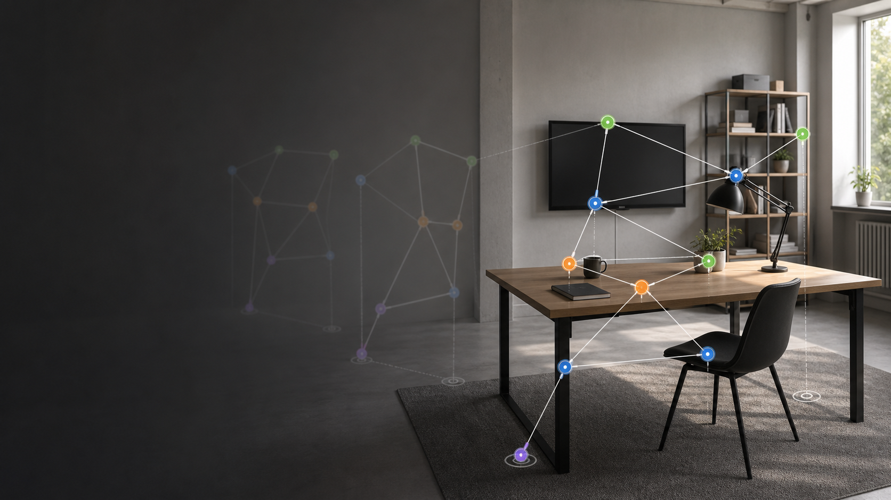
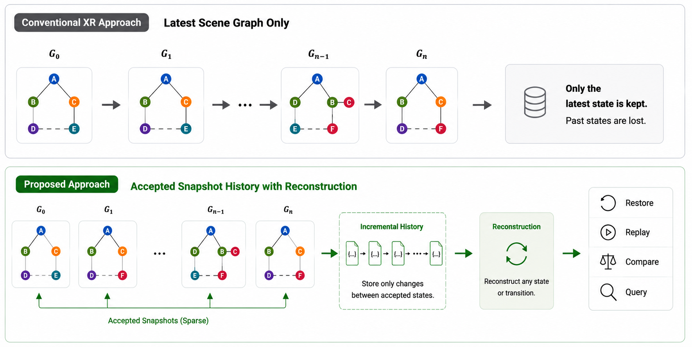
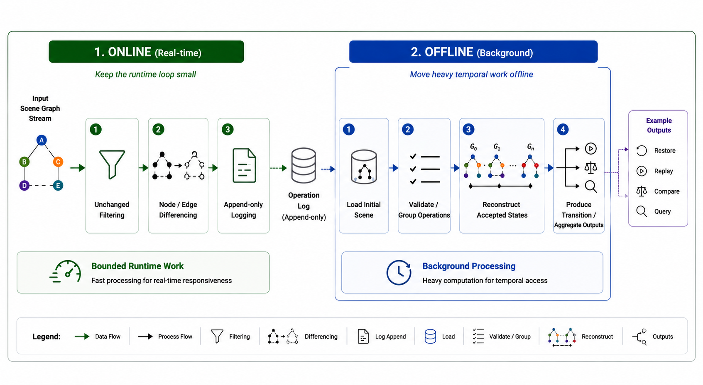
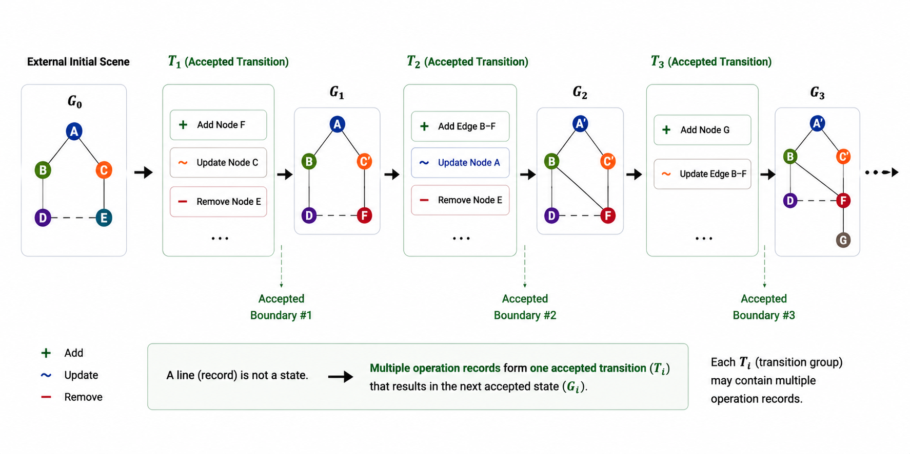
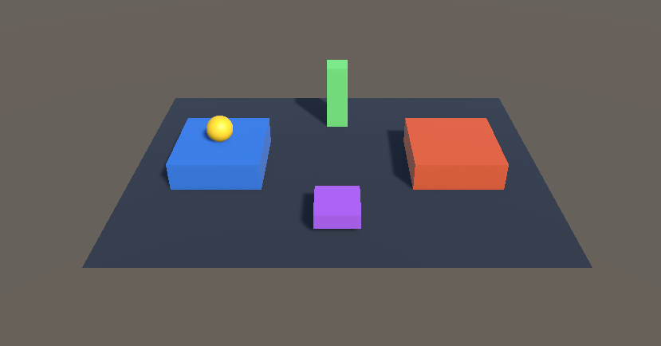
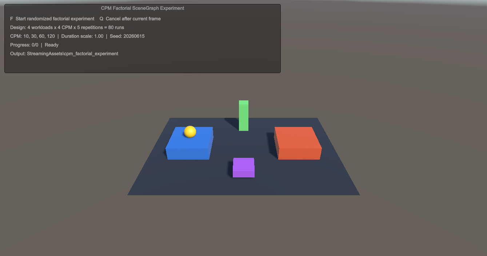
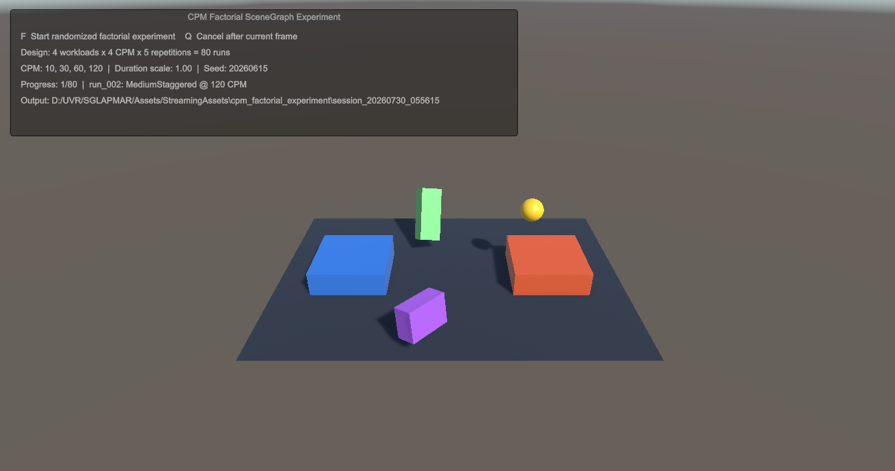
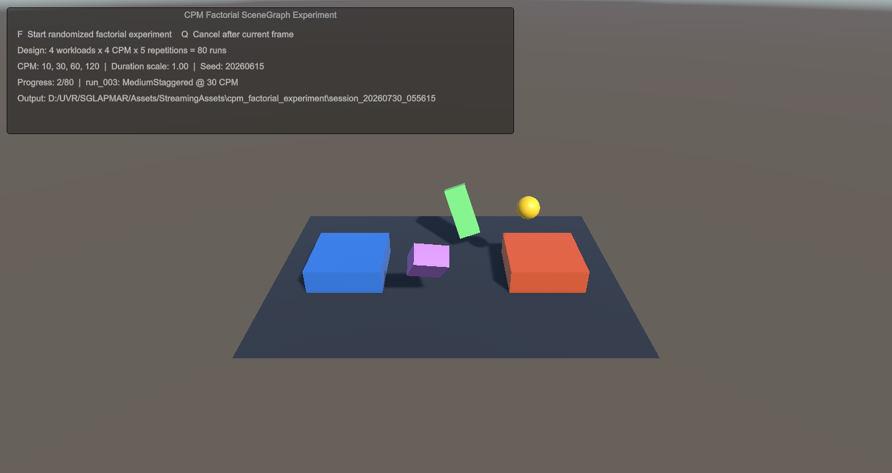

APMAR 2026 · 10-minute talk
Incremental Snapshot Management for Real-Time Spatial Scene Graphs in AR and VR
Keep the changes. Recover the history.

01 · Motivation
The latest graph is useful.
The missing history is the problem.
A conventional XR runtime overwrites yesterday's scene with today's state.

02 · Scope
A narrow layer after scene understanding
The manager consumes complete, renderer-independent graphs with stable identities.
Scene production
Tracking · Mapping · Simulation · Authoring
Snapshot management
Filter · Diff · Append · Reconstruct
update_nodeadd_edgeremove_node
Temporal products
Restore · Replay · Compare · Query
Assumes complete graph states and identity continuity
Does not perform tracking, mapping, or graph construction
03 · Architecture
Bounded online work. Heavy temporal work offline.

04 · Representation
A log line is an operation. A group is a transition.

add_nodeupdate_noderemove_nodeadd_edgeremove_edgeMultiple records share one snapshot_id and together produce the next accepted state.
05 · Online prototype
Unity accepts change, not every capture attempt
Complete graph state
SceneGraphExtractor reads stable node identities, transform properties, and current relations from the Unity scene.
Deterministic signature
Sorted node properties and edge identities form a canonical signature. Matching signatures are rejected immediately.
sig(Gt)=sig(Glast)SKIPDiff and append
The accepted graph is compared with the previous accepted state. Completed node and edge operations are appended immediately.
06 · Offline prototype
Append first. Reconstruct and replay later.
One durable operation per line
{"seq":42,
"snapshot_id":"snapshot_0017",
"op":"update_node",
"node_id":"orb",
"changed_properties":["position"]}History materializer
snapshot_playback.jsonsnapshot_final_scene.jsonsnapshot_aggregate_diff.json07 · Study design
Four temporal patterns, then four capture rates
08 · In-engine study
The factorial study runs inside the same Unity scene


09 · Live execution
Every run exposes its workload, rate, and progress


10 · Reliability
Every controlled history reaches the correct final graph
The prototype preserves accepted transition order and reconstructs the same final graph as the Unity ground truth.
11 · Storage
Incremental history is compact only when change is sparse
0.86×aggregate ratio
Why does the dense workload cross 1.0?
Readable operation records repeat sequence metadata, identifiers, timestamps, operation names, and JSON field names.
Sparsity amortizes that overhead. Continuous change does not.
12 · Sensitivity
Higher capture rates preserve more of the path, not a better endpoint
Final graph recovered
Position RMSE: 0
Final relation recall: 100%
Mean relation operations rose from 4.35 to 7.45, exposing more transient changes.
13 · Takeaway
Incremental history is a practical interface — and a conditional storage win.
Preserve accepted transitions when change is sparse. Switch strategy when the scene becomes dense.
What this establishes
- Scene production and temporal access can be separated by a small graph-state interface.
- Explicit transitions support restore, replay, comparison, and query without repeated full-state diffing.
- Capture rate should follow the temporal questions an application needs to answer.
What comes next
Deployed traces · periodic checkpoints · transactional groups · multi-writer ordering · scalable encodings